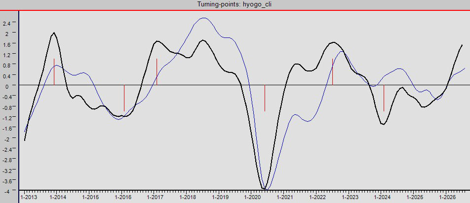

１ 作成目的
地域ごとの景気変動パターンの独自性が注目され、地域においても他地域との景気変動パターンの違いを把握することが重要である。
地域の景気動向を的確・早期に把握するため、地域版CLI（Composite Leading Indicators：景気先行指数、以下CLIという。）を作成する。
２ CLIの特徴と作成方法
（１）特徴
CLIは、景気転換について早期のシグナルを与えるように設計されている。
生産の初期段階を計測し，経済活動の変化に迅速に反応し，将来の活動に関する期待に感応的であると考えられることから，景気動向に先立った政策立案に有効である。
（２）作成方法
①データの読み込み
兵庫県立大学ソーシャルデータサイエンス研究所の支援を受けて景気動向指数の個別指標(月次データ)を収集し、整理（エクセルデータ）する。
②データの変換
期種変換（月次、四半期次）、季節調整（加算式または乗算式）、一定比率のもとでの外れ値の設定などを行う。
③トレンド除去と平滑化
④指定系列の集計
採用する系列を指定し、ウェイトを変更しながら個別CLI を合成する。
⑤転換点の検出
ブライ・ボッシャン法を用いて指定された系列の転換点を求め、参照系列と比較する。
⑥実際の景気転換点（景気基準日付）を設定する。
ソフトウエア(CACIS； Cyclical Analysis and Composite Indicators System )を利用する。
兵庫県のCLIを県の景気動向指数先行指数の個別指数全体を用いて試算した。その今月の結果は以下の通り。

データ
兵庫CLIダッシュボード１（個別指標加工プロセスチャート）
兵庫CLIダッシュボード２（個別指標ビジネスサイクルクロックチャート）
消費税率改定時(1994年4月、2014年4月、2019年10月）と兵庫CLIの動き（20200210 兵庫県景気動向懇話会資料）
コロナショック前後のCLIと先行指数個別系列について（20201009 兵庫県景気動向懇話会資料）
2020～2021年のコロナ禍における兵庫CLIの動き（20220311 兵庫県景気動向懇話会資料）
2020～2022年のコロナ禍における兵庫CLIと物価の動き（20230310 兵庫県景気動向懇話会資料）
2020～2023年の兵庫県版 CLI の現状分析及び見通しについて（20240219 兵庫県景気動向懇話会資料）
兵庫県CLI による現状分析とwavelet分析によるCLI先行性の検討（20250304 兵庫県景気動向懇話会資料）
wavelet分析による大阪・関西万博の兵庫県CLIへの影響分析（20260209 兵庫県景気動向懇話会資料）
兵庫県の景気動向指数におけるウェーブレット分析（産研論集 第53号）
兵庫県統計課
兵庫県計画課
兵庫県立大学ソーシャルデータサイエンス研究所
兵庫CLI月報基調判断グラフ＆関連データ（兵庫県立大学ソーシャルデータサイエンス研究所作成）
OECD関連ページ